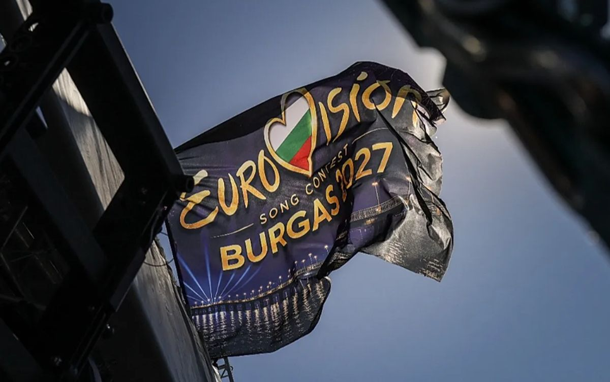

Avroviziya 2027: Niderland qərarını dəyişdi və...

AvroviziyaNiderland 2027-ci il “Avroviziya” mahnı müsabiqəsində iştirak etməkdən imtina edib.
İştirakdan imtina qərarı
Əldə olunan məlumatlara əsasən, Niderlandın ictimai yayımçılarının təşkilatı olan NPO ölkənin müsabiqəyə qayıtmaqla bağlı əvvəlki qərarını ləğv edib. Bildirilir ki, bu addımın atılmasına İsrailin yarışmadakı iştirakı ətrafında yaranan müzakirələr və narahatlıqlar səbəb olub.
Xatırladaq ki, daha əvvəl ölkənin yayımçısı AVROTROS avqust ayında məhz bu səbəbdən yarışmadan çəkildiyini elan etmişdi. Niderlandın təmsilçi göndərmək qərarı isə ölkə daxilində tənqidlərə yol açmış, təxminən 400 NPO əməkdaşı mövqeyə yenidən baxılmasını tələb etmişdi.
Digər ölkələrin də mövqeyi açıqlandı
NPO-nun direktoru Jet de Ranitz qeyd edib ki, Niderland təmsilçisinin iştirakını təmin edə biləcək hər hansı yayımçı tapılmayıb. Bununla belə, NPO müsabiqəni öz efirində yayımlamağa davam edəcək. Qeyd olunur ki, təkcə Niderland deyil, İrlandiya da “Avroviziya-2027”də qatılmayacağını bildirib, Çexiya isə büdcə məhdudiyyətləri səbəbindən yarışmadan kənarda qalıb.
Mənbə: Qafqazinfo